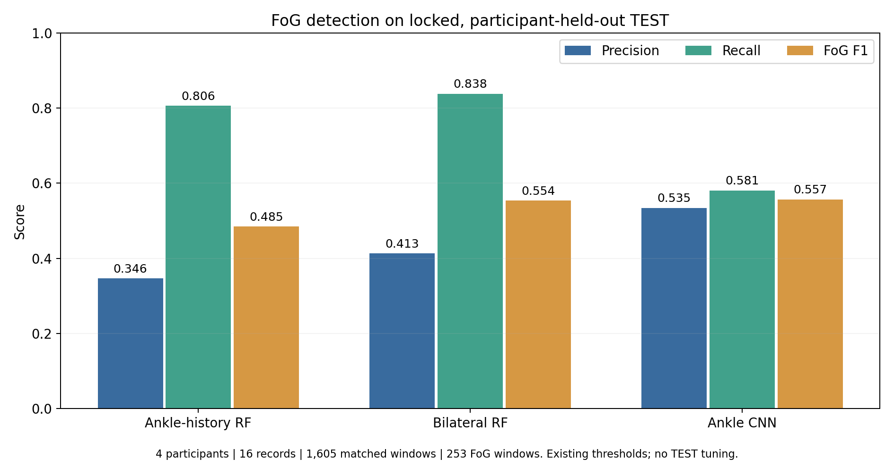
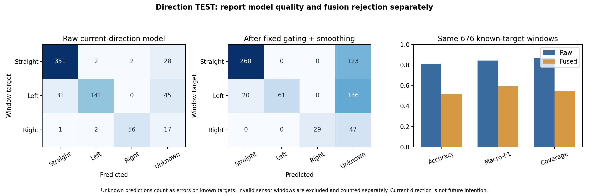
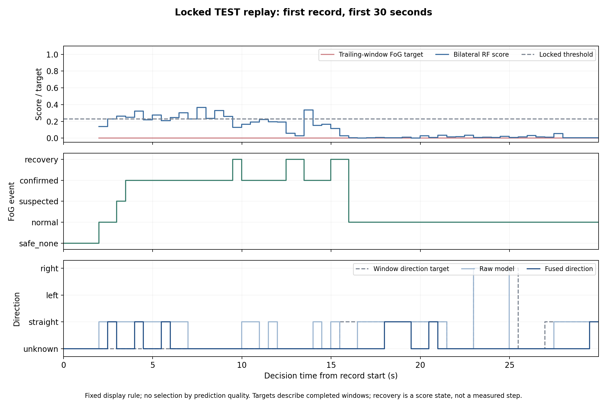

4 participants, 16 records. Existing weights and thresholds; no fitting or parameter search on TEST.
| method | accuracy | precision | recall | fog_f1 |
|---|---|---|---|---|
| ankle_history_rf | 0.730 | 0.346 | 0.806 | 0.485 |
| bilateral_rf | 0.787 | 0.413 | 0.838 | 0.554 |
| ankle_cnn | 0.854 | 0.535 | 0.581 | 0.557 |
Raw direction: accuracy 81.07%, macro-F1 0.844, coverage 86.69%. Fused direction: accuracy 51.78%, macro-F1 0.592, coverage 54.73%. Direction scores use 676 valid known-target windows. 398 invalid sensor windows and 531 unknown-target windows have separate denominators.
FoG false alarms remain substantial. Fixed direction fusion sacrifices coverage; it does not improve overall direction accuracy. Four held-out participants do not establish clinical performance or external-dataset generalization.




Unknown input remains unknown. No motion-response or clinical outcome is evaluated.